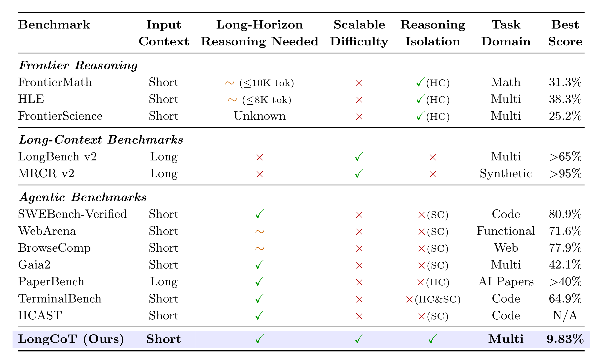
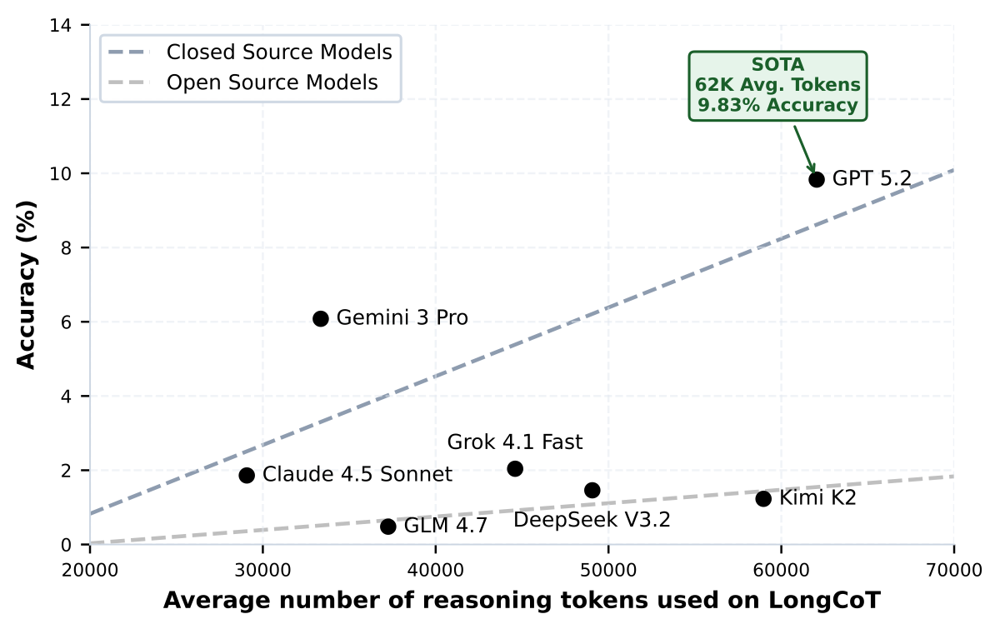
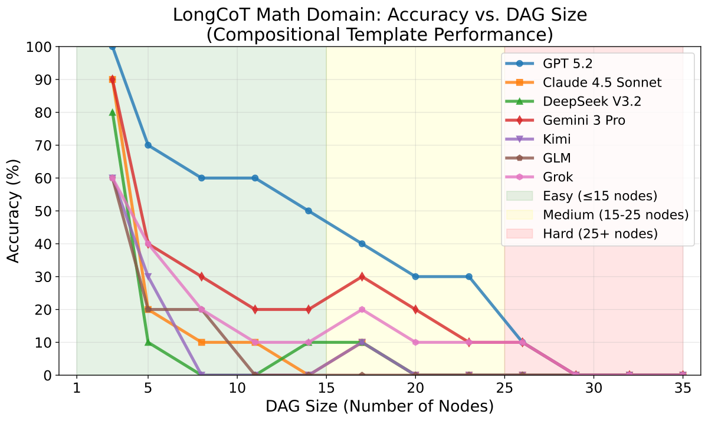
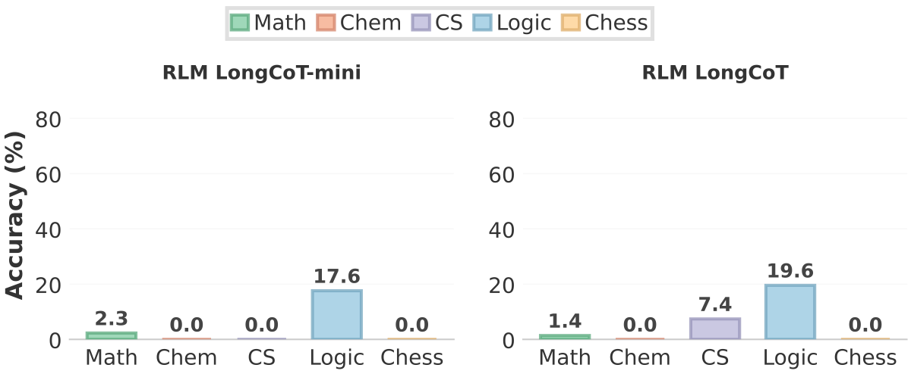

| Rank | Model | Provider | Overall | Logic | CS | Chemistry | Chess | Math |
|---|
LongCoT studies a specific capability: how accurately can frontier models reason over long horizons in their chain of thought? The benchmark is designed to measure this capability directly rather than through long-context retrieval, tool use, or agent scaffolds.
It contains 2,500 expert-designed problems across chemistry, mathematics, computer science, chess, and logic. Each problem is a short prompt with a verifiable answer, but solving it requires maintaining a coherent reasoning trace across many interdependent steps.
At release, the best model reaches only 9.83% accuracy on LongCoT. The benchmark exposes a substantial gap in the ability of current frontier models to reason reliably over extended horizons.

LongCoT combines short inputs, long reasoning outputs, controlled single-step difficulty, verifiable answers, and no tool dependencies. HC denotes hardness-confounded benchmarks; SC denotes scaffold-confounded benchmarks.
LongCoT is difficult in a qualitatively different way from short-reasoning benchmarks: plans drift, partial results are lost, backtracking is costly, and simple scaffolds do not reliably recover the missing capability.

Higher token usage correlates with better performance, but even the strongest model remains below 10% accuracy. GPT 5.2 leads the benchmark at 9.83% while averaging roughly 62K reasoning tokens per question.

Performance drops sharply as dependency graphs get larger. The benchmark shows that long-horizon reasoning is not just short reasoning repeated many times: errors accumulate, plans drift, and recovery becomes hard.

Recursive Language Models with GPT 5.2 do not outperform GPT 5.2 alone on the compositional core of the benchmark. This is consistent with LongCoT's design: the key difficulty lies in sustaining one coherent reasoning trace, not merely distributing steps across a scaffold.
Each domain is built from realistic templates that encode explicit or latent computational structure. This forces models to sustain coherent reasoning over the full dependency graph.
Planning, search, and constraint-satisfaction problems that require models to track state, explore alternatives, detect dead ends, and backtrack when early choices make the task unsolvable.
Algorithm simulation and program tracing: type inference, scheduling, flow networks, Turing machines, matrix chain multiplication, IR optimisation, and more.
Multi-step molecular reasoning: property computation, reaction prediction, topology analysis, substructure matching, and protein structure analysis via SMILES strings.
Combinatorial chess reasoning: move evaluation, game reconstruction, move simulation, and constrained pathfinding.
Chained competition-style problems with linear, DAG, conditional, and backtracking dependency structures between subproblems.
These examples illustrate the benchmark's core pattern: short prompts with verifiable answers whose real difficulty comes from traversing a longer dependency structure.
DAG Chained Problems: A sequence of olympiad-style subproblems where each answer parameterises later nodes. The individual steps are standard competition questions; the difficulty comes from propagating values correctly through the graph.
Problem node_0: The top section of an 8 cm by 6 cm rectangular sheet of
paper is folded so that corner P lands on corner R. What is the length
of the crease?
Problem node_1: Find the number of ordered [node_0 numerator + 49]-tuples
(x_0, ..., x_63) of distinct elements of {1, 2, ..., 2017} such that
x_0 + x_1 + 2x_2 + 3x_3 + ... + 63x_63 is divisible by 2017.
Problem node_2: A convex polyhedron has congruent triangular faces with
angles 36°, [derived from node_1]°, and [derived from node_1]°. What is
the maximum possible number of faces?
Problem node_3: A positive sequence satisfies
a_(n+1) a_(n-1)^5 = a_n^4 a_(n-2)^2
with a_1 = 8, a_2 = [node_2 + 28], and a_3 = 1024. Compute
sqrt(a_1 + sqrt(a_2 + sqrt(a_3 + ... ))).
...
Problem node_6: Pablo assembles 27 unit cubes into a 3 x 3 x 3 cube.
If 10 small cubes are red, 9 blue, and 8 yellow, what is the smallest
possible red surface area?
Problem node_14: Sylvia chooses positive integers a, b, c. Peter computes
a + b/c, Paul computes a/c + b, and Mary computes (a + b)/c = k, with the
first two values determined by earlier nodes. What is k?
What are the answers to node_14, node_0, node_3, and node_6?
solution = [13, 15/2, 3√2, 12]
Reaction Cascade: Multi-step molecular reasoning over SMILES strings. Molecules are selected by properties, reacted under specified conditions, and analysed for topological properties.
Subproblem 1: Given molecules A: ClC=1C=C(C(=O)OO)C=CC1, B: CC(C)Sc1ccccc1, C: CC(C)(C)N1CCNCC1=O — select the one with the greatest number of unique radius-2 Morgan fingerprint bits. -> Mol-1 Subproblem 2: Choose which SMILES from three options is equivalent to NC1=C(SC=2N=C(N=C(C21)C2=NC=CC(=C2)OC)SC)C(=O)N -> Mol-2 Subproblem 3: Predict the major product when Mol-1 reacts with Mol-2 in CHCl3 at 0°C. -> Mol-3 Subproblem 4: Select the SMILES matching formula C4H11NO -> Mol-4 Subproblem 5: Predict the product of Mol-3 + Mol-4 in DMF at 90°C -> Mol-5 Subproblem 6-7: Select molecules by implicit hydrogen count -> Mol-6, Mol-7 Subproblem 8: Predict reaction product of Mol-6 + Mol-7 in CHCl3 at 65°C -> Mol-8 Subproblem 9: Compute topological diameter of Mol-5, Mol-7, Mol-8.
solution = [11, 5, 5]
Minimax Pawn Capture: Alice and Bob play a turn-based game on a 30×30 board. Alice maximises total knight moves; Bob minimises them. Each turn, a player selects a pawn for the knight to capture via shortest BFS path.
Board size: 30 x 30 Knight position: [7, 13] Pawn positions: [[21,20], [12,3], [24,27], [5,9], [27,7], [22,6], [12,9], [9,8], [9,25], [4,19], [20,2], [8,8], [26,9], [10,28], [6,8]] Rules: - Alice goes first, tries to maximise total moves - Bob tries to minimise total moves - Each turn: select any remaining pawn, knight captures it via shortest BFS path (may pass other pawns without capturing) - Both players play optimally Return the maximum total number of moves Alice can achieve.
solution = 106
Sokoban: Push all boxes ($) onto goal positions (.) on an 11×8 grid. One wrong push can make the puzzle unsolvable, requiring planning and backtracking.
Grid (11 x 8, 5 boxes, 5 goals): [[ , #, #, #, #, #, #, #, , , ], [#, #, , , , , , #, #, , ], [#, , , $, , $, , , #, , ], [#, , $, , $, , $, , #, , ], [#, #, , #, #, #, , #, #, #, #], [ , #, @, , , ., ., ., ., ., #], [ , #, #, , , , , , #, #, #], [ , , #, #, #, #, #, #, #, , ]] Player (@) at (5,2). Boxes at (2,3),(2,5),(3,2),(3,4),(3,6). Goals at (5,5),(5,6),(5,7),(5,8),(5,9). Find a sequence of U/D/L/R moves that pushes all boxes onto goals.
solution = UURRUURRDDDUUULLDDLLDDRRRRRR... (144 moves)
Distributed Memory Simulation: Simulate a bitonic compare-split routine on a distributed-memory machine, record the synchronized states, and then answer downstream questions about baseline and intervened runs.
procedure foo(local, rank, P):
sort(local, ascending=true)
k = 2
while k <= P:
j = k / 2
while j >= 1:
partner = rank XOR j
ascending_block = ((rank & k) == 0)
i_am_low = ((rank & j) == 0)
keep_small = (ascending_block == i_am_low)
local = compare_split(local, partner, keep_small)
j = j / 2
barrier()
k = k * 2
Input size N = 512, processors P = 16.
Starting values: the sequence 512 down through 1 distributed contiguously
across 16 processors in blocks of size 32.
Recorded states:
- S0 is the initial layout
- S1 is after each processor locally sorts its block
- Each later state records one synchronized compare-split round
Selected chained questions:
Q1: In state S0, how many values are stored on each processor?
Q12: What is the minimum value on a derived processor p in a derived state S_s?
Q15: Under an intervention that negates odd local indices on odd processors at
every odd state, what is x - 2y for a derived processor/state pair?
Q25: After adding a positive delta to every value on one processor at an
intermediate state, what is the sum of all values in the final modified run?
Return the answers to Q12, Q15, and Q25.
solution = [193, 496, 131360]
* Joint-first authors.
Correspondence: charles.london@cs.ox.ac.uk, sumeet.motwani@eng.ox.ac.uk.
If you found LongCoT useful, please cite us at:
@article{motwani2025longcot,
title = {LongCoT: Benchmarking Long-Horizon
Chain-of-Thought Reasoning},
author = {Motwani, Sumeet Ramesh and Nichols, Daniel and London, Charles and Li, Peggy and Pizzati, Fabio and Blake, Acer and Hammoud, Hasan and McDonald, Tavish and Naik, Akshat and Ivanova, Alesia and Baskaran, Vignesh and Laptev, Ivan and Glatt, Ruben and Ben-Nun, Tal and Torr, Philip and Jaques, Natasha and Prabhu, Ameya and Bartoldson, Brian and Kailkhura, Bhavya and Schroeder de Witt, Christian},
year = {2025},
eprint = {2510.07312},
archivePrefix = {arXiv},
primaryClass = {cs.LG},
url = {https://arxiv.org/abs/2510.07312}
}